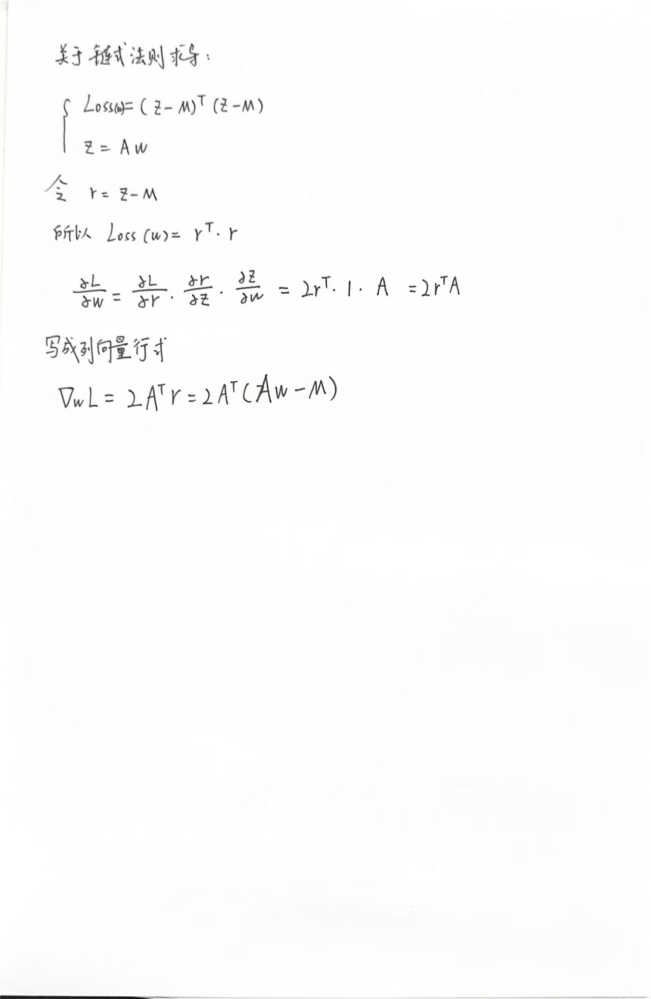
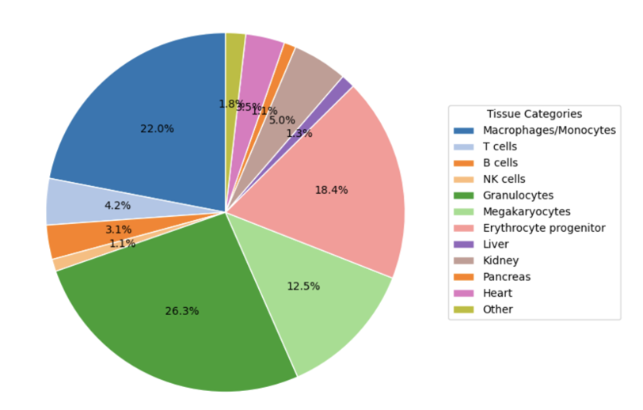

梯度下降的原理及可视化
0 什么是梯度下降
梯度下降是一个很重要的算法，其核心原理是方向导数。在这一个 section 里，我将层层递进，引出梯度。
1.那么何为方向导数呢？
想象一个函数 z = f(x,y),其中 x,y是自变量，范围为全体实数，z=f(x,y)在三维坐标系内，是一个二维曲面。该曲面上有一点(x0,y0,f(x0,y0)),XOY平面上有一个单位向量 l，求这一点在 l 向量方向上的导数，即为方向导数(图1)。

2.方向导数的定义式及其计算式（图2）:

其中图中的 f 对 x和 y的偏导数组成的向量，即为梯度向量(Gradient)
所以方向导数=偏导数·方向向量，根据向量点乘的运算法则，方向导数=|梯度向量| * |方向向量| * cos(夹角)，由于方向向量是单位向量，所以方向导数的最大值是 “|梯度向量|” 的模长，最小值是 “-|梯度向量|”的模长。
3.方向导数的几何意义
在图1中，方向导数的意义就是 z=f(x,y)在(x0,y0,f(x0,y0))点上，沿着单位向量 l 的导数。导数的意义是函数值关于自变量的变化率。一个点的导数越大说明，函数值在这个点上变化的越快。反之亦然。想象一下，我们处于下面的山峰上，如果你所处的位置关于 l 方向的方向导数是最大的(大于 0)，说明沿着 l 方向上函数值的变化率是最大的(此时 l 向量与梯度向量平行)，也就是最陡峭，沿着最陡峭的方向走，你将更快到达山顶。反之，如果你所处的位置关于 l 方向的方向导数是最小的(小于 0)，说明沿着 l 方向上函数值的变化率是负值且是最小的(此时 l 向量与梯度向量夹角为-180 度)，也就是下坡方向最陡峭，沿着这个方向走，你将更快到达山底。
当然这只是你在形状十分规则的山上的到达山顶和山底的行进方向，若是山的形状不规则呢？那你如何走呢，才能上山最快 或者 下山最快呢？
解决办法是引入一个参数：学习率 learn rate(lr)
举个例子，你当前所处的位置是(x0,y0,f(x0,y0)),梯度向量是(fx(x0,y0),fy(x0,y0)),若是追求下山最快，那么就沿着(fx(x0,y0),fy(x0,y0))方向相反的方向走，也就是加一个负号。若是追求上山最快，那么就沿着(fx(x0,y0),fy(x0,y0))方向相同的方向走。
新位置(下山最快)的计算公式就是：
new_position = (x0,y0) - lr * (fx(x0,y0),fy(x0,y0))
那学习率如何更直观的理解呢？
想象一个不规则的山（图3），从山顶有一股泉水，泉水在重力的作用下流到山底，假设不受其他情况的影响，河流的形状可能是 “S” 形的。水流是聪明的，他们会每走几步到达一个新位置(上面提到的new_position)之后就重新计算一次梯度，来指示他们的下一步行动。细心的河流走小小的一步就计算一个梯度，粗心的河流走大大的一步才计算一个梯度。小小的和大大的 指的就是 这里的学习率(lr),因为有可能每一步计算的梯度向量的方向是改变的，所以河流的形状也变成弯弯曲曲的了。

1 梯度下降的应用
由于韩遇安/赵从文最近，在利用 cfDNA 上的甲基化的信息进行反卷积来推测各个组织的贡献(利用甲基化信息来推断组织贡献是一种比较常用的方法,利用RNA的信息也能够推断出组织贡献(或者免疫浸润的情况(有专门的R包能做这个)))。简单来说，我现在有组织 A 的甲基化参考图谱，有组织 B 的甲基化参考图谱，还有一个组织 A 和组织 B 按照一定比例混合的 mixture，利用 Non-Negative Least Squares(NNLS) 和 每种组织的甲基化参考图谱就能够推测出这个 mixture 中的 A和 B的比例。
NNLS是寻找一个最优的 x 向量，来最小化下面这个表达式（图4）。

这个式子的含义是，通过优化 x，来使Ax-b的L2范数(就是计算向量的模长)的平方最小。并且约束条件是 x>=0。
其中 x 指的是每一种组织的比例，默认每一种组织的比例是>=0的(生物上的可解释性更强，如果出现负数，那就麻烦了，可能是暗物质，哈哈哈哈)
怎么找到一个最优的 x 呢？这里就用到了梯度下降算法。
最小化的那个式子就是山，需要求解的系数向量x就是你在山上的位置，你要每次走一小步并且不断的求梯度，直到你到达谷底(loss最小)，这时候理想情况下，梯度向量为(0,0)。但是梯度向量为(0,0)的有两种可能(图5)：一个是局部最优解(local optimum)，一个是全局最优解(global optimum)，我觉得一般情况下找到的都是局部最优解,比较难找到全局最优解(我觉得，我猜的)。

2 梯度下降的代码实现及其可视化
1 |
|
其中涉及一些矩阵求导的运算,我把三个常用的贴到下面(图6):

这里我们使用 NNLS 时的 loss 函数是：Loss = (Ax - M)^2, 用到的是第三个求导法则,其详细求导过程如下：

3 运行结果


我们可以看到随着迭代次数的增加，loss 的逐渐下降，并且可以看到每一次迭代的结果点，是沿着一个比较陡峭的路线下降的(图7/8)(可能是局部最优的方式),其中绿色菱形代表的是所有迭代中最优的参数组合。
这就是梯度下降算法的原理和应用咯，诸君！如有不严谨，多多包涵！
实际应用的时候，是不会有人手动实现梯度下降的，都已经集成的非常好了，可以直接import and run，也不会只有两个变量需要优化，反卷积的时候待推测的组织的比例可能有10种，比如我利用 cfDNA 上的甲基化去推测各个组织的贡献比例的时候就有好多种组织(图9)。

除此之外，在梯度下降找到最优解的时候还存在一个问题就是局部最优解，我目前能想到的解决办法是使用stochastic gradient descent(随机梯度下降)方法。随机梯度下降与batch gradient descent(批量梯度下降)相比，随机梯度下降更随机(随机选择一个样本计算梯度)，在一定程度上能够帮助逃离较差的局部最优解，避免卡在平坦区域和鞍点上。
在 AI 可解释性领域(方面)会用到梯度分析法：
当模型训练完成(参数固定下来之后), 此时，参数不再是自变量，而输入数据变成了自变量，此时输入数据为 A, 然后得到loss, loss对输入数据A求导，得到loss关于A的梯度(这里的梯度已经不是梯度下降时指示参数更新方向的用途了,而是计算loss对A的敏感程度了,可以理解成斜率)，如果此时梯度很大，说明A很重要，A改变一点loss会改变很大。一般还会做这个操作：A * A_grad,因为如果 A 的梯度很大，但是 A 本身的值很小，那么影响说不定也可以忽略不计，所以需要与自身的值相乘来得到一个更有价值的信息。除了与自身值相乘外,还有种方法叫：积分梯度，这个涉及到了路径积分，很有意思哦。
最近好久没更新，心血来潮，更新了一下，梯度下降算是机器学习/深度学习领域的基石，其核心是方向导数和链式法则。学习道路上总是充满着好奇和疑惑，想起罗素的一句话:
“The trouble with the world is that the stupid are cocksure and the intelligent are full of doubt.”
所以有疑惑的人就是聪明人，我是聪明人，如是而已，哈哈哈。
2026.6.11 更
1.梯度下降里面还会涉及到 Momentum，
v = β * v + g
θ = θ - lr * v
其中：
g = 当前梯度
v = 动量(Momentum)，也可以理解为历史梯度方向的累计
β = 动量系数，比如 0.9
直观的理解是：SGD 像一个没有惯性的小球，每一步都听当前梯度。Momentum 像一个有惯性的小球，会沿着长期趋势继续运动。受单个 batch 的影响比较小。
2.Adam: Momentum + 自适应学习率 Adam(Adaptive Moment Estimation)
m = 梯度的一阶动量，也就是梯度的滑动平均
v = 梯度平方的二阶动量，也就是梯度大小的滑动平均
m = β1 * m + (1 - β1) * g
v = β2 * v + (1 - β2) * g^2
θ = θ - lr * m / (sqrt(v) + eps)
m 负责方向
v 负责缩放步长
直观理解：如果某个参数的梯度一直很大，就让它步子小一点。如果某个参数的梯度一直很小，就让它步子相对大一点。
3.AdamW: Adam + weight_decay
θ = θ - lr * Adam_update
θ = θ - lr * weight_decay * θ
参数更新：
一部分来自梯度
一部分来自参数自身的衰减
可以理解成：不要让参数变得太大
4.Grad Scaler
对于梯度，还有一系列操作呢？比如如果精度用FP16(16-bit Floating Point)，那么在梯度很小的时候，梯度可能直接就变成 0 咯，所以将 loss * 很大的常数, 求偏导的时候，会在梯度前面也乘一个很大的常数，更新的时候再unscale计算梯度。
5.Grad clip
给梯度的 L2 范数 设置一个 threhold，如果梯度的 L2 范数 超过这个 threhold,对梯度向量进行缩放。
比如一个梯度向量: g = [3, 4, 0]
grad_clip = 1.0
A = 1/L2_norm(g) = 0.2
new_g = [0.6, 0.8]
注意如果使用了 grad scaler，要先unscale,再 grad clip
6.Vanishing gradient and Exploding gradient
Vanishing gradient:
residual connection, F(x) = f(x) + x
Exploding gradient:
Initialization(like Xavier,He)
Normalization(Batch/Layer/Group)
AdamW(本身抑制大更新)
Gradient Clipping